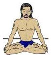
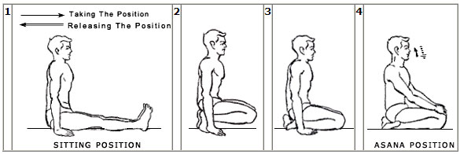
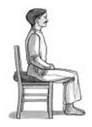

Meditation
When we pray, we talk to God! When we meditate, God talks to us! The fundamental of meditation is “Silence is the voice of God!” Meditation is a way of living! It is a journey from daily introspection to deep concentration to self-realization! Freedom offers powerful Concentration Techniques to pursue Spiritual Meditation. Meditation is a state where soul gets in touch with its source. It is a state of oneness where divine perceptions/spiritual experiences happen in the form of visions or voices or a feeling of blissfulness. Answers to all problems in life become accessible as one is in tune with the library of ether. It is a state where one can realize oneself as a soul & not a body. There are four steps to reach the above state:- - Sitting Posture: It is an integral part to the journey of meditation. The basic idea is to the keep the spine straight so that energy is evenly distributed into the body and uplifted to the brain for higher purposes. Various sitting postures can be adapted as per one’s convenience. Some important poses are as follows:-
Lotus pose or Padamasana: It is considered to be the ideal pose for meditation as it not only keeps the spine straight but also blocks the energy from going down.
From a seated posture, one foot is placed on top of the opposite thigh with sole facing upward and heel close to the abdomen. The other foot is then placed on the opposite thigh in a symmetrical way. The knees are in contact with the ground. The torso is placed in balance and alignment such that the spinal column supports it with minimal muscular effort. The torso is centered above the hips. To relax the head and neck, the jaw is allowed to fall towards the neck and the back of the neck to lengthen. The shoulders move backwards and the ribcage lifts. The tongue rests on the roof of the mouth. The hands may rest on the knees & arms are relaxed with the elbows slightly bent.
Diamond Pose or Vajrasana: Vajrasana is also known as the Diamond Pose. The term Vajrasana is derived from two Sanskrit words Vajra means thunderbolt and Asana means pose. The word Vajra can also decipher as va + ra where va means to move and ra means radiant. According to its literal meaning it is a pose that radiates blood supply and subtle energies to upper body.
Vajrasana is considerably easy pose that can be practiced by everyone, but those who are suffering from knee injuries or pain in the knee should not practice this asana.

The practitioner sits on the heels with the calves beneath the thighs. There is a four finger gap between the knee-caps and the first toe of both the feet touch each other.
1. Fold the left leg in the knee and place the toe on the floor.
2. Fold the right leg in the knee and place the toe on the floor and join the two toes.
3. Sit on the pit formed by the parted heels.
4. Place the palms on the knees.
Sitting on a chair with a straight spine: This is a convenient option for people with problems in their knees or with old aged people.
Infact, in all the above poses, one can place a cushion under the pelvic area to give more support to the spine inorder to keep it straight for a long period of time. To startwith, one must practice sitting in any of the above mentioned postures with a straight spine for atleast 10mins twice a day. Then slowly but steadily increase the time as per one’s comfort.
- Concentration Power: The most active part in the process to achieve meditation is “concentration.” One must always remember that the essence of this journey is “Silence”. It is mandatory to quieten the turbulence of a restless mind by consciously practicing some concentration techniques. Some excellent concentration techniques can be practiced as given below:-
Steady Gazing ( Tratak) : Place a candle an arm’s length away at eye level, gaze at the flame without blinking for 1-5 minutes. Your eyes will water, cleansing the eyes and the tear ducts. Now close your eyes and picture the flame at a point between the eyebrows. Tratak improves eyesight & concentration, and is used as a preliminary exercise for meditation.
Reciting a Mantra: A mantra is a sound formula which has the power to produce healing & devotion.
- Interiorization: Deep Meditation demands complete interiorization. There is, infact, a stage in meditation called Pratyahara, which means to interiorize even the senses.
Gazing at the Spiritual Eye: Open the door to higher wisdom by steadily gazing at the point between the eyebrows i.e at the Spiritual Eye.
Focus on your Breath: Concentrate intensely on the inflow & outflow of your breath. You can give a Mantra like “Hong” when you inhale & “Sau” as you exhale. Mentally chant the mantra with the breathing rhythm.
- State of Perception: When complete silence of mind is achieved, higher awareness can be perceived. Although, it is difficult to express the experience in words, still a human being can realize his true strength in this state of higher consciousness and the spiritual journey goes on…
|